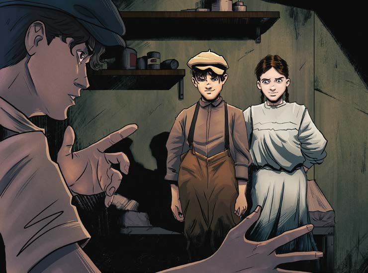

ojeras oscuras que resaltan en el rostro pálido.
A los labios también les falta color.
Quizá esté agotada o asustada.
El varón traba la puerta por dentro y vuelve a sentarse.
—Javier —se presenta y se sonroja de inmediato—.
Vengo de Montevideo.
Los mira con un poco de aprehensión.
Probablemente no sepan dónde queda esa ciudad ni les importe.
Sin saber por qué, recuerda a su tío abuelo Arturo, a quien le hacía toda clase de preguntas sobre Uruguay y el mundo.
Rara vez Arturo habla de sí mismo, como si hubiera una parte de su vida que le perteneciera únicamente a él y que no comparte con nadie.
Una vez le contó a Javier